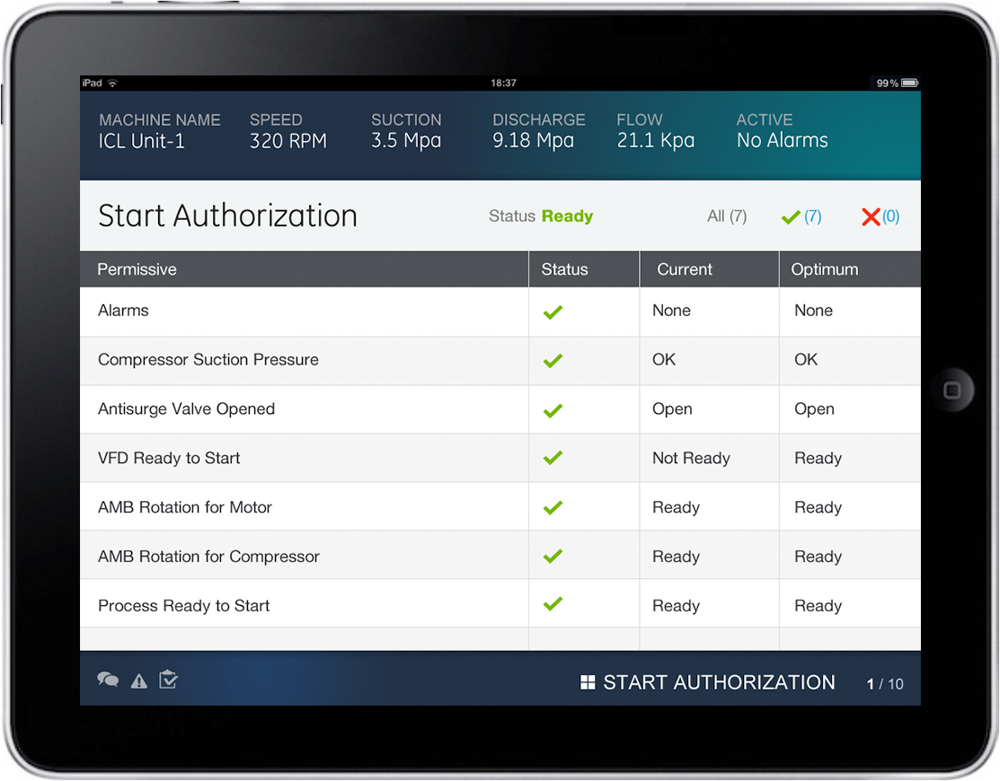
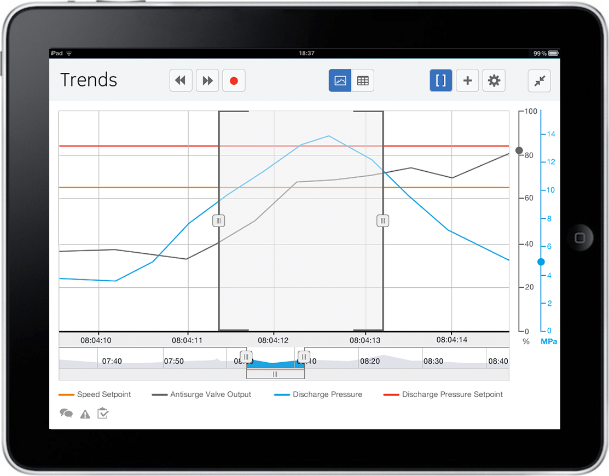
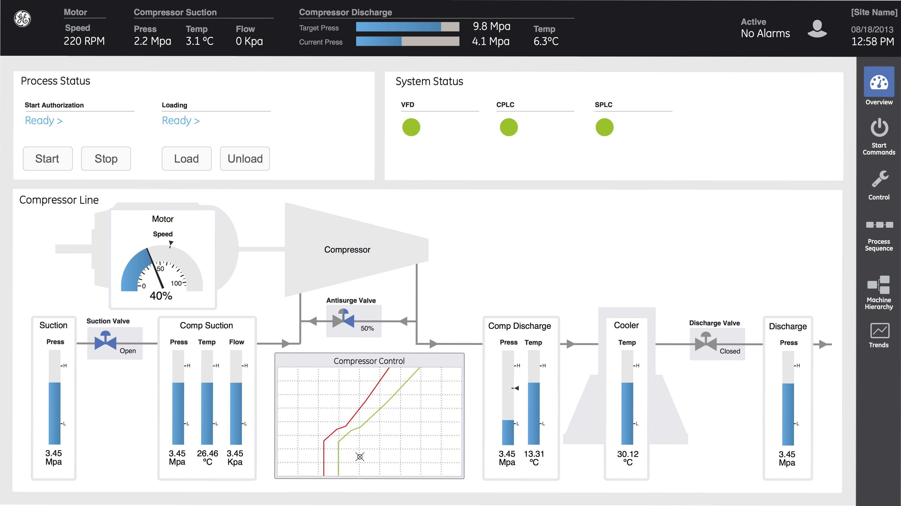
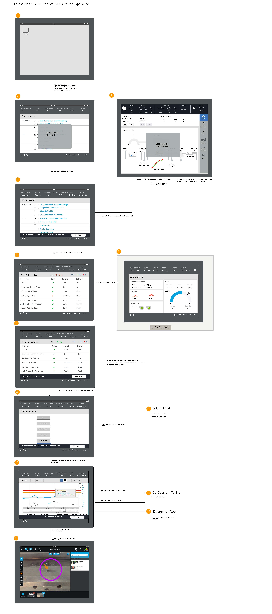
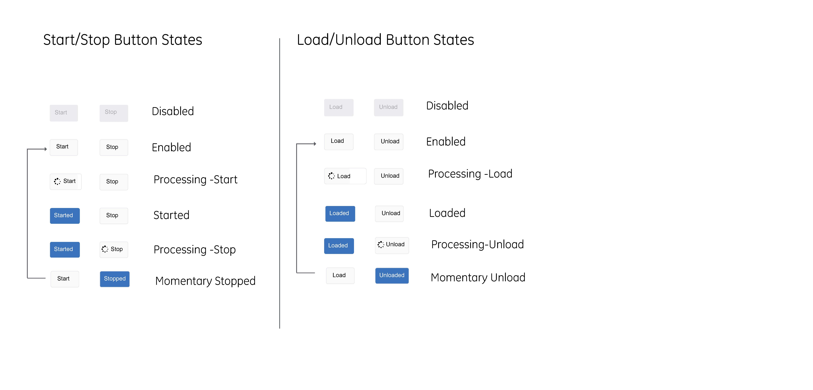

Field Service Application
Improving UX Quality and Mobile Integration
- 
-

- 
- 
Background
GE Integrated Compressor Line (ICL ) is a compressor solution for gas storage and pipeline applications. Field Service Engineers (FSE, also known as a Startup Engineers) commission the ICL. They primarily interact with the control software through HMIs (Human Machine Interface) that reside on the cabinets and through the programming tool for the control system.
Challenges
- FSEs are having to work with so many disparate systems that does not have consistency.
- Interaction paradigms and user experience have remained static despite advances in technology and evolving user expectations.
- FSEs work in teams and yet they do not leverage the latest advances in collaboration and Mobile technology
Goals
Design and prototype a concept car user interface that enables a GE field service engineer to commission the ICL more efficiently and increase the overall quality and consistency of the user experience.
My Role
Research Participation, Storyboarding, Stakeholder Coordination (GE Oil & Gas Florence, GE Power Conversion Rugby, GRC Niskayuna,San Ramon) Wireframing in InDesign, Design Review and Collaboration with Engineering.
Our approach was to understand the needs and pain points of the user from on-site research visits. Based on the findings,we envisioned and created this storyboard to showcase the tasks of a Field engineer and where new technologies can be incorporated to improve the UX. This was received very well by our stakeholders and leadership teams.
Storyboard
Scenario
To narrow our focus for the concept car, we created a real world scenario based on the task analysis which can convey how the FSE can work with disparate systems with a consistent and seamless cross screen experience with state of the art of UX. We used the GE Predix Reader (Mobile Platform) and Industrial Internet Design System (IIDS) to design the various screens to achieve consistency. Illustrated below is the flow of cross screen experience. This was demonstrated at the GE Software Technology Conference as a showcase for Predix Machines.
Design Guidelines
We created detailed design guidelines for the HMI considering safety and FSE experience in mind.
